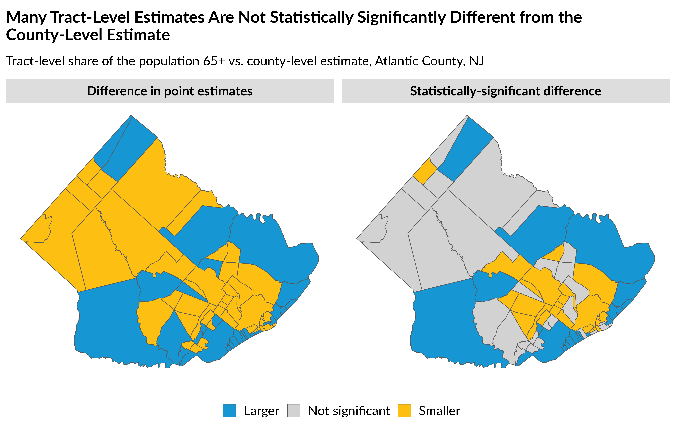
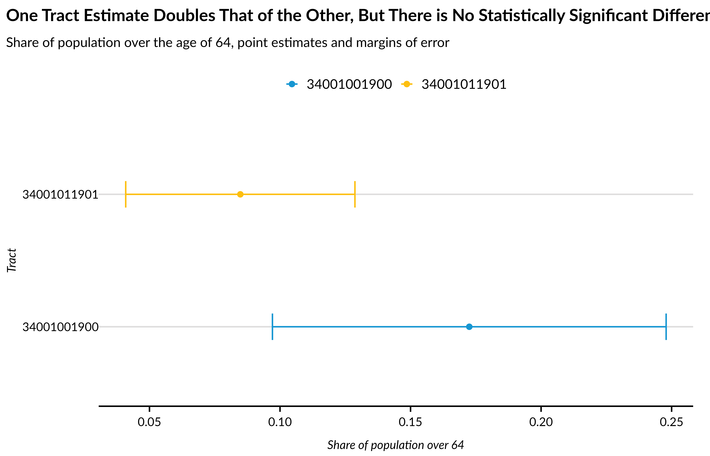

Quantified Survey Errors and Accurate Inference-Making
quantified-survey-error.Rmd
library(dplyr)
library(ggplot2)
library(tidyr)
library(stringr)
library(urbnindicators)
library(sf)
library(urbnthemes)
library(tidycensus)
library(gridExtra)Because data from the American Community Survey are–you guessed it–survey data, they are subject to sampling error. Sampling error means, in very brief, that when we extrapolate from our sample–say, 200 households out of a neighborhood of 1,000 households–we make assumptions* that the sample is representative of the population. These assumptions are inherently imperfect, and so the estimates we use based on sample responses have a (quantifiable) amount of error associated with them.
*In reality, the “assumptions” used by the Census Bureau to extrapolate from survey responses to population estimates are very sophisticated. When working with individual-level data via the ACS Public Use Microdata Sample (PUMS), the error generated by these assumptions can be calculated by using a set of 80 variables that describe “replicate weights”. But when working with pre-tabulated ACS estimates, as is the case here, the error generated by these assumptions is conveniently reported alongside the associated estimate as margin of error.
Using the known error around an estimate allows us to better say what we do and do not know about the population. Without this information, we might say, based on our sample of 20 households, that 5% of neighborhood households are housing cost-burdened renter households. But when we factor in the error around the estimate, we might say something more nuanced, like: “Between 3.5% and 6.5% of households are housing cost-burdened renter households.” This reflects that survey estimates are more accurately thought of as a range of likely values, rather than a single absolute value.
Using quantified error around survey estimates will allow us to do three (at least) critical classes of activities to improve our inference-making with these data:
Evaluate estimate quality to inform whether we should, for example, aggregate our data to create more precise estimates or select a different measure or data source.
Conduct statistical significance testing to evaluate whether an estimate is statistically significantly greater than another estimate(s).
Report and visualize error to our audiences so that they can understand the limitations of the data.
Below, we illustrate how urbnindicators facilitates each of these three classes of activities. But first, a very quick overview of measures of error.
Margins Of Error (MOE) are our baseline measurement of error. The ACS reports MOEs at a 90% confidence level, which enables us to say something like: “20% (±5%) of households in the neighborhood have no access to a car.” (And then we should include, either as a footnote or in the body of the document, that this and other MOEs are calculated at the 90% confidence level). What this means in practice is that if we were to repeat 100 times–using exactly the same methods–our methods to calculate this estimate, 90 of those times we would produce a parallel estimate between 15% and 25%, while 10 of those times, our estimate would fall outside this range.
Standard Errors (SE) are derived from MOEs by dividing the MOE against a confidence level-related value. urbnindicators returns 90% SEs, which are calculated by dividing an MOE by 1.645.
Coefficients of Variation (CV) relate error to the size of the estimate. They are calculated by dividing the SE by the estimate and then multiplying by 100. CVs are helpful because they provide a unit-agnostic measurement of variable quality: a CV of 40 for a given variable means the same thing as a CV of 40 for another unrelated variable, whereas MOEs and SEs are not directly comparable across variables.
acs_df_county = compile_acs_data(
years = c(2022),
geography = "county",
states = "NJ")
#> Downloading: 44 kB Downloading: 44 kB Downloading: 46 kB Downloading: 46 kB Downloading: 46 kB Downloading: 46 kB Downloading: 81 kB Downloading: 81 kB Downloading: 110 kB Downloading: 110 kB Downloading: 110 kB Downloading: 110 kB Downloading: 120 kB Downloading: 120 kB Downloading: 120 kB Downloading: 120 kB Downloading: 130 kB Downloading: 130 kB Downloading: 150 kB Downloading: 150 kB Downloading: 200 kB Downloading: 200 kB Downloading: 200 kB Downloading: 200 kB Downloading: 210 kB Downloading: 210 kB Downloading: 260 kB Downloading: 260 kB Downloading: 380 kB Downloading: 380 kB Downloading: 460 kB Downloading: 460 kB Downloading: 520 kB Downloading: 520 kB Downloading: 2 MB Downloading: 2 MB Downloading: 2 MB Downloading: 2 MB Downloading: 3.7 MB Downloading: 3.7 MB Downloading: 5.3 MB Downloading: 5.3 MB Downloading: 7 MB Downloading: 7 MB Downloading: 8.6 MB Downloading: 8.6 MB Downloading: 10 MB Downloading: 10 MB Downloading: 12 MB Downloading: 12 MB Downloading: 12 MB Downloading: 12 MB Downloading: 12 MB Downloading: 12 MB
acs_df_tract = compile_acs_data(
years = c(2022),
geography = "tract",
states = "NJ",
spatial = TRUE)
#> | | | 0% | |==================== | 29% | |========================== | 37% | |============================= | 41% | |================================ | 46% | |=================================== | 50% | |====================================== | 54% | |========================================= | 58% | |============================================ | 62% | |============================================= | 64% | |================================================= | 71% | |====================================================== | 77% | |========================================================== | 83% | |======================================================================| 100%Evaluate Estimate Quality
CVs allow us to assess whether estimates have problematically large errors. While there’s not a right-or-wrong threshold for what constitutes a good/bad CV, many people employ thresholds between 30 and 40 (that is, where there error is 30-40% of the size of the estimate).
As shown below, variables that rely on larger sample sizes tend to have smaller CVs. Typically, there are two strategies to reduce CVs: (1) aggregate estimates, either across geographies or across variables, or (2) use larger geographies.
We plan to add utilities to support users in aggregating estimates and calculating adjusted measurements of error. For now, we warn that any aggregation should be done with care, as error cannot be simply added (or otherwise summarize) the way that estimates can.
(Note that in the visualization below, some tract-level CVs exceed 1000; we only represent those with values at or below 100).
histogram_cvs = function(.df, geography_type = "Tract") {
.df %>%
sf::st_drop_geometry() %>%
dplyr::select(dplyr::matches("^age.*percent.*CV")) %>%
dplyr::select(dplyr::matches("(_6|_7|_8)")) %>%
tidyr::pivot_longer(dplyr::everything()) %>%
ggplot2::ggplot() +
ggplot2::geom_histogram(ggplot2::aes(x = value, fill = if_else(value < 30, "1", "0"))) +
ggplot2::geom_vline(xintercept = 30, linetype = "dashed") +
ggplot2::facet_wrap(~ name, ncol = 3) +
ggplot2::guides(fill = "none") +
urbnthemes::theme_urbn_print() +
ggplot2::labs(
x = "CV",
y = "",
subtitle = stringr::str_c(geography_type, "-level estimates"))
}
county_plot = histogram_cvs(acs_df_county, geography_type = "County") +
labs(
title = stringr::str_c(
"Estimates Relying on Larger Samples Generally Have Smaller CVs \n",
"Combine Variables or Use Larger Geographies to Reduce Error"))
tract_plot = histogram_cvs(acs_df_tract, geography_type = "Tract") +
scale_x_continuous(limits = c(0, 100)) +
labs(title = "\n")
gridExtra::grid.arrange(
county_plot,
tract_plot,
ncol = 2)
Conduct Statistical Significance Testing
Statistical significance testing is critical to understanding whether estimates are meaningfully different. Estimates that may appear substantially different in isolation are frequently, especially at smaller geographies, not statistically significantly different because there errors are so significant.
We’ll illustrate this numerically and demonstrate the impacts of
accounting for error when visualizing data, leveraging
tidycensus::significance() to conduct our actual tests.
Here, we’ll compare each tract-level value within a single county to
that of the corresponding county.
cv_to_moe = function(cv, estimate) {
cv / 100 * 1.645 * estimate
}
plot_data = acs_df_tract %>%
filter(str_detect(NAME, "Atlantic")) %>%
select(GEOID, matches("age_over_64_percent")) %>%
mutate(county_geoid = stringr::str_sub(GEOID, 1, 5)) %>%
left_join(
acs_df_county %>%
filter(str_detect(NAME, "Atlantic")) %>%
select(GEOID,matches("age_over_64_percent")) %>%
rename_with(
.cols = matches("age_over_64_percent"),
.fn = ~ str_c(.x, "_county")),
by = c("county_geoid" = "GEOID")) %>%
mutate(
naive_comparison = case_when(
age_over_64_percent > age_over_64_percent_county ~ "Larger",
age_over_64_percent < age_over_64_percent_county ~ "Smaller",
TRUE ~ "Equal") %>%
factor(levels = c("Smaller", "Equal", "Larger"), ordered = TRUE),
significance = tidycensus::significance(
est1 = age_over_64_percent,
est2 = age_over_64_percent_county,
moe1 = cv_to_moe(cv = age_over_64_percent_CV, estimate = age_over_64_percent),
moe2 = cv_to_moe(cv = age_over_64_percent_CV_county, estimate = age_over_64_percent_county),
clevel = 0.9),
significance_direction = case_when(
significance == FALSE ~ "Not significant",
significance == TRUE & age_over_64_percent > age_over_64_percent_county ~ "Significantly larger",
significance == TRUE & age_over_64_percent < age_over_64_percent_county ~ "Significantly smaller") %>%
factor(levels = c("Significantly smaller", "Not significant", "Significantly larger"), ordered = TRUE))
statistically_significant = plot_data %>%
ggplot() +
geom_sf(aes(fill = significance_direction)) +
scale_fill_manual(values = c(
"Significantly larger" = "#73bfe2",
"Significantly smaller" = "#fdd870",
"Not significant" = "lightgrey")) +
theme_urbn_map() +
labs(
fill = "Statistical significance",
title = "Many Tract-Level Estimates Are Not Statistically Significantly Different from the County-Level Estimate" %>% str_wrap(80),
subtitle = "Tract-level share of the population 65+ vs. county-level estimate, Atlantic County, NJ" %>% str_wrap(60))
error_naive = plot_data %>%
ggplot() +
geom_sf(aes(fill = naive_comparison)) +
scale_fill_manual(values = c(
"Larger" = "#73bfe2",
"Smaller" = "#fdd870",
"Equal" = "lightgrey")) +
theme_urbn_map() +
labs(
fill = "Error-naive comparison",
title = "\n\n",
subtitle = "\n")
gridExtra::grid.arrange(
statistically_significant,
error_naive,
ncol = 2)
signficance_test_data = plot_data %>%
filter(GEOID %in% c("34001011901", "34001001900"))
## TRUE
significant_difference = significance(
est1 = signficance_test_data %>% filter(GEOID == "34001001900") %>% pull(age_over_64_percent),
est2 = signficance_test_data %>% filter(GEOID == "34001011901") %>% pull(age_over_64_percent),
moe1 = cv_to_moe(
cv = signficance_test_data %>% filter(GEOID == "34001001900") %>% pull(age_over_64_percent_CV),
estimate = signficance_test_data %>% filter(GEOID == "34001001900") %>% pull(age_over_64_percent)),
moe2 = cv_to_moe(
cv = signficance_test_data %>% filter(GEOID == "34001011901") %>% pull(age_over_64_percent_CV),
estimate = signficance_test_data %>% filter(GEOID == "34001011901") %>% pull(age_over_64_percent)))
plot_data %>%
filter(GEOID %in% c("34001011901", "34001001900")) %>%
ggplot(aes(y = GEOID, x = age_over_64_percent, color = GEOID)) +
geom_point() +
geom_errorbar(aes(
xmin = age_over_64_percent - cv_to_moe(cv = age_over_64_percent_CV, estimate = age_over_64_percent),
xmax = age_over_64_percent + cv_to_moe(cv = age_over_64_percent_CV, estimate = age_over_64_percent)),
width = 0.2) +
theme_urbn_print() +
labs(
x = "Share of population over 64",
y = "Tract",
title = "Despite the Estimate for One Tract Tripling That of the Other, the Difference is Barely Statistically Significant Owing to the Large Errors" %>% str_wrap(100))
Report and Visualize Error
The ability to quantify error both allows us to conduct statistical significance testing and to directly report error, either in text and/or via visualizations. As illustrated above, MOEs can be reported directly alongside estimates in the text as parentheticals: estimate (±MOE). A similar approach can be employed for statistical significance testing, with statistical significance being notated as a “*“, for example, or via a longer”p < .10” statement.
For most such cases, it will be helpful to provide some guidance to your audience about what the MOE/statistical significance means and how it should shape their interpretation of point estimates, such as via a footnote/endnote, through a call-out box, or in a section on your methods.
In tables, you can either present MOEs/statistical significance in the same cell as the point estimates or via a companion column. Depending on your goals, CVs may be used to altogethersuppress some estimates within a table, though this approach also has limitations (e.g., it may lead to obscuring important but small-population groups or geographies, not just in a single table but across many such tables).
There are myriad approaches to visualizing error. Generally, the use
of error bars (look no further than the visual immediately above) should
be avoided, as research consistently shows that most audiences do not
interpret such bars accurately. The excellent
library(ggdist) provides an array of methods for different
styles and methods of visualizing error, while visualizing statistical
significance relative to a benchmark (see the map above) is another
common approach.